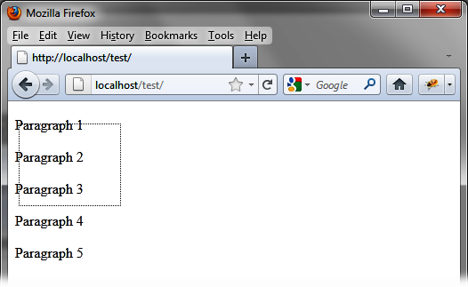

{% include JB/setup %}
{% raw %}
<div>
<div class="calibre13"></div><div class="book" title="Chapter 11. Selecting Items"><div class="book"><div class="book"><div class="book"><div class="calibre13"></div><h1 class="title1"><a id="selecting_items" class="calibre1"></a>Chapter 11. Selecting Items</h1></div></div></div><p class="calibre7">jQuery UI makes it easy to select items on the page.
  <span class="firstname"><em class="calibre4">Select</em></span> means that the page elements can be grouped in
  the same block to be processed simultaneously (e.g., selecting several files
  to put them in the trash). Rather than putting them one by one into the
  trash (using the drag-and-drop functionality that we examined in <a class="ulink" href="ch10.html" title="Chapter 10. Drag-and-Drop">Chapter 10</a>), items are selected using the mouse and then
  dragged together to the trash.</p><p class="calibre7">jQuery UI has implemented this functionality in a similar way to that
  found in graphical operating systems such as Windows, Mac OS, or Linux. You
  can use the mouse to select multiple items and also select or deselect an
  individual item in the group by pressing the Ctrl key while you
  click.</p><div class="book" title="Basic Principles of Selecting Items"><div class="book"><div class="book"><div class="book"><h1 class="title2"><a id="basic_principles_of_selecting_items" class="calibre1"></a>Basic Principles of Selecting Items</h1></div></div></div><p class="calibre7">Suppose we want to write the HTML code to display the selection
    shown in <a class="ulink" href="ch11.html#selecting_items_in_a_html_page" title="Figure 11-1. Selecting items in an HTML page">Figure 11-1</a>. Here, we have
    five paragraphs and we selected the first three with the mouse. A dotted
    rectangle is added during mouse movement, showing the selection
    area.</p><p class="calibre7">The selectable items should be grouped together in a <code class="literal">&lt;div&gt;</code> (or any other parent). All elements
    in the descendants of that parent can be selected.</p><p class="calibre7">In the <code class="literal">&lt;script&gt;</code> tag, the
    encompassing <code class="literal">&lt;div&gt;</code> element is
    managed by the jQuery UI <code class="literal">selectable ()</code>
    method:</p><a id="I_programlisting11_d1e10185" class="firstname"></a><pre class="programlisting">&lt;script src = jquery.js&gt;&lt;/script&gt;
&lt;script src = jqueryui/js/jquery-ui-1.8.16.custom.min.js&gt;&lt;/script&gt;

&lt;link rel=stylesheet type=text/css
      href=jqueryui/css/smoothness/jquery-ui-1.8.16.custom.css /&gt;

&lt;div id=div1&gt;
  &lt;p&gt; Paragraph 1 &lt;/p&gt;
  &lt;p&gt; Paragraph 2 &lt;/p&gt;
  &lt;p&gt; Paragraph 3 &lt;/p&gt;
  &lt;p&gt; Paragraph 4 &lt;/p&gt;
  &lt;p&gt; Paragraph 5 &lt;/p&gt;
&lt;/div&gt;

&lt;script&gt;

$("#div1").selectable ();

&lt;/script&gt;</pre><div class="book"><div class="figure"><a id="selecting_items_in_a_html_page" class="firstname"></a><div class="book"><div class="book"><a id="I_mediaobject11_d1e10190" class="firstname"></a></div></div><p class="title4">Figure 11-1. Selecting items in an HTML page</p></div></div></div></div></div>

{% endraw %}

